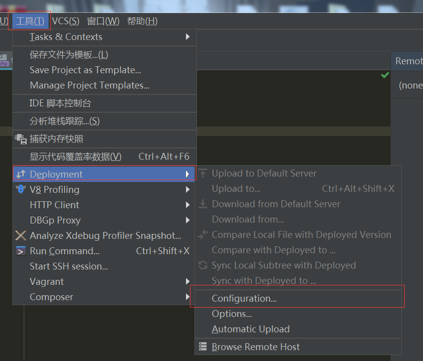

原文出处:本文由博客园博主半路情花已盛开提供。
原文连接:https://www.cnblogs.com/liyunhang/p/10714031.html
原文连接:https://www.cnblogs.com/liyunhang/p/10714031.html
当服务器是Linux的时候不懂指令觉得很懊恼，这个时候直接就可以使用PHPstorm连接服务器操作了；
1丶准备工作
首先你先要准备服务器丶phpstorm这两个吧！
2丶开始配置phpstorm

按照红线的部分一步一步的走
点击configuration
点击+号 我直接选择的sftp

就这样连接成功了！